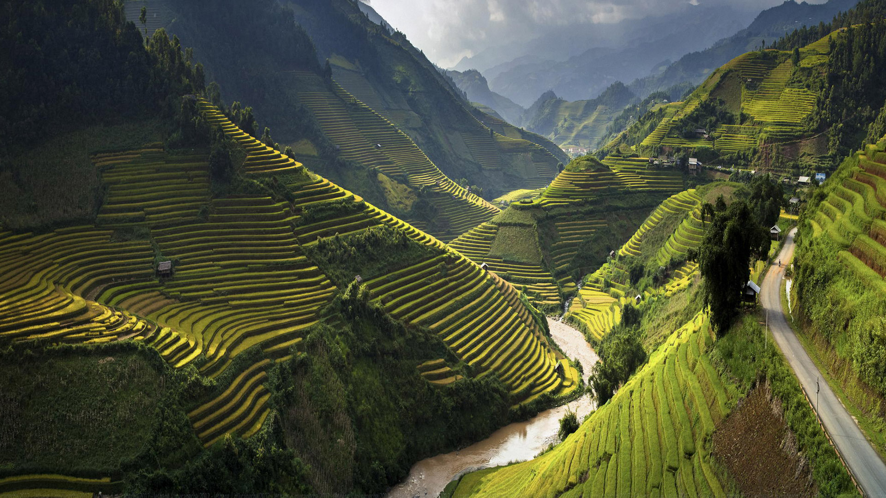
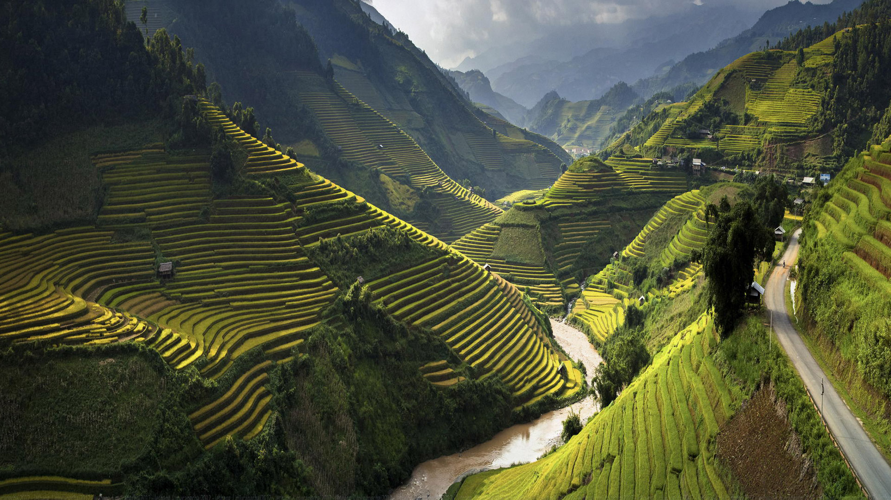

Vietnam ofrece infinidad de experiencias inolvidables... Sublimes, como otear el surrealista paisaje de islas de caliza desde la cubierta de un junco en la bahía de Halong. Desquiciantes, como tardar 10 min en cruzar una calle entre miles de motos en Hanói. Inspiradoras, como explorar el sistema de cuevas más espectacular del mundo en el Parque Nacional de Phong Nha-Ke Bang. Cómicas, como observar un ciclomotor cargado de cerdos avanzar zigzagueando por un camino rural. Y, también, reflexivas, como observar una tumba solitaria en un cementerio repleto de miles de víctimas de la guerra.
Camboya, el Reino de las Maravillas, uno de los principales destinos más atractivos del sudeste asiático, donde el viajero podrá experimentar y descubrir un mundo lleno de tesoros y excelencias. Camboya no es solo un lugar para admirar las obras arquitectónicas que nos ha dejado la antigua civilización Khmer, es también un lugar para involucrarse y descubrir su rica cultura y la simpatía de la gente camboyana. Nos gusta seducir a nuestros viajeros con itinerarios a medida, mezclando excursiones culturales, relax en las playas y con experiencias más activas como el trekking, actividades acuáticas, bicicleta, elefantes, etc. ¡Ven, porque Camboya te va a enamorar!.
¿Te has preguntado alguna vez qué ver en Indonesia ? Pues nada más y nada menos que unas 17.000 islas y pequeños islotes conforman y te esperan en este destino. Ideal para quienes apuesten por el turismo mas exclusivo, en hoteles de lujo o más económicos.... Playas paradisíacas, volcanes milenarios, ríos vertiginosos, románticos lagos, cataratas entre selvas, templos fascinantes, etnias primitivas y una flora y fauna sin igual.... Java, Bali, Kalimantan, Sumatra, Flores y Komodo entre otros lugares brindan un impresionante abanico de opciones para cualquier viajero y tienes que decidir qué ver en Indonesia.